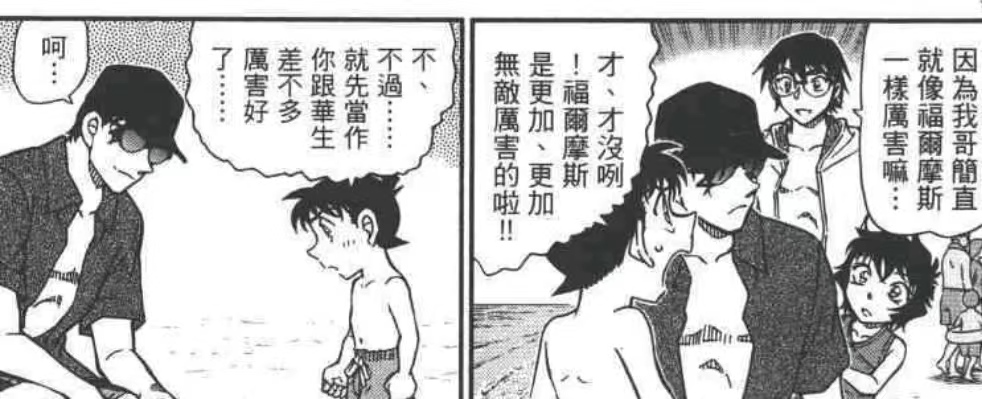

虽然青山说名柯在最初是打算做短篇的但在设计角色时尤其是名字时一定下了不少功夫。
在设计男主时为了与福尔摩斯之间产生联系，大概率是先从夏洛克·福尔摩斯Sherlock Holmes中提取其缩写SH，再以SH为基础做出发点去寻找合适的人名作为真名来源。而从短篇转长篇开始进行三银弹的布局也沿用了当时构思男主名字的思路，最终将锁定了科幻小说家星新一hoshi shinichi和配音演员池田秀一ikeda shuichi。虽然青山还没有明说志保shiho名字的来源，但和新一一样从星新一中各取一半来设计的观点可能性较高，符合命运共同体的设计思路，也真亏他能找到一个与推理有关名字里还带有两个sh的人物。如果名字的设计思路猜测成立，好像可以反推青山在还是短篇设计之初就已经留了一手。
在完成了人物命名后，青山又非常巧妙地让三位银弹分别与福尔摩斯、华生和艾琳产生联系。至此，主角团已集齐代表福华艾的三枚银色子弹，那黑方呢？是否有一位代表或者想要成为平成/令和年代的詹姆斯·莫里亚蒂教授。
在设计男主时为了与福尔摩斯之间产生联系，大概率是先从夏洛克·福尔摩斯Sherlock Holmes中提取其缩写SH，再以SH为基础做出发点去寻找合适的人名作为真名来源。而从短篇转长篇开始进行三银弹的布局也沿用了当时构思男主名字的思路，最终将锁定了科幻小说家星新一hoshi shinichi和配音演员池田秀一ikeda shuichi。虽然青山还没有明说志保shiho名字的来源，但和新一一样从星新一中各取一半来设计的观点可能性较高，符合命运共同体的设计思路，也真亏他能找到一个与推理有关名字里还带有两个sh的人物。如果名字的设计思路猜测成立，好像可以反推青山在还是短篇设计之初就已经留了一手。
在完成了人物命名后，青山又非常巧妙地让三位银弹分别与福尔摩斯、华生和艾琳产生联系。至此，主角团已集齐代表福华艾的三枚银色子弹，那黑方呢？是否有一位代表或者想要成为平成/令和年代的詹姆斯·莫里亚蒂教授。
工藤新一Kudo Shinichi
想成为平成年代的福尔摩斯
贝尔摩德期盼的银色子弹
绯色的侦探 赤井秀一Akai Shuichi
主角认可的华生
BOSS害怕的银色子弹
绯色的搜查官
作者指定的艾琳
明美希望的银色子弹
绯色的科学家？
想成为平成年代的福尔摩斯
贝尔摩德期盼的银色子弹
绯色的侦探 赤井秀一Akai Shuichi
主角认可的华生
BOSS害怕的银色子弹
绯色的搜查官

宫野志保Miyano Shiho作者指定的艾琳
明美希望的银色子弹
绯色的科学家？
至于名柯世界观下的莫里亚蒂可能性。A药的全名是apotoxin4869,其中apotoxin是程式细胞之死的意思，而4869在日语中又是夏洛克的谐音，A药的名字似乎可以恶趣味地命名为【凋亡的名侦探】。
在这首次提及A药全名的再会篇里同时给出了【残废的名侦探】这一提示，灰原也很意外电脑的密码是福尔摩斯之前的试用名字雪林福特，组织居然这么诙谐。组织里有熟悉福尔摩斯的人，那么这位设置密码的人物和命名A药的人是否会是同一个人呢？
关于灰原也是华生的观点，在柯哀之间有一个比较浪漫的形容“平成时代的福尔摩斯，你的华生和艾琳是同一个人”。灰原哀Haibara Ai的缩写是HA，既然其中的A在故事外是作者取自艾琳，那H呢？在故事之外是否取自约翰.H.华生。
从现在官方给出的人物关系图来看，作为曾经见证过赤新二人的玛丽对现在的新一评价“他和十年前已经判若两人”。
十年前把赤井当成华生的新一，十年之后呢。如果哪天柯南对灰原说“对我而言，你就是华生”感觉也没什么好惊讶，好像还能与m6呼应上。
2024-04-02 08:32 | ArroJia:如果把真名里的sh也算进来，灰原似乎是同时兼具福华艾三元素设计的角色。与柯南默契配合时是华生，作弄柯南时是艾琳，在柯南下线时又担任福尔摩斯。2024-04-13 22:24 | 贴吧用户_G7G52WW:回复 ArroJia :哀和福尔摩斯同样擅长化学
三个人都是假死

好